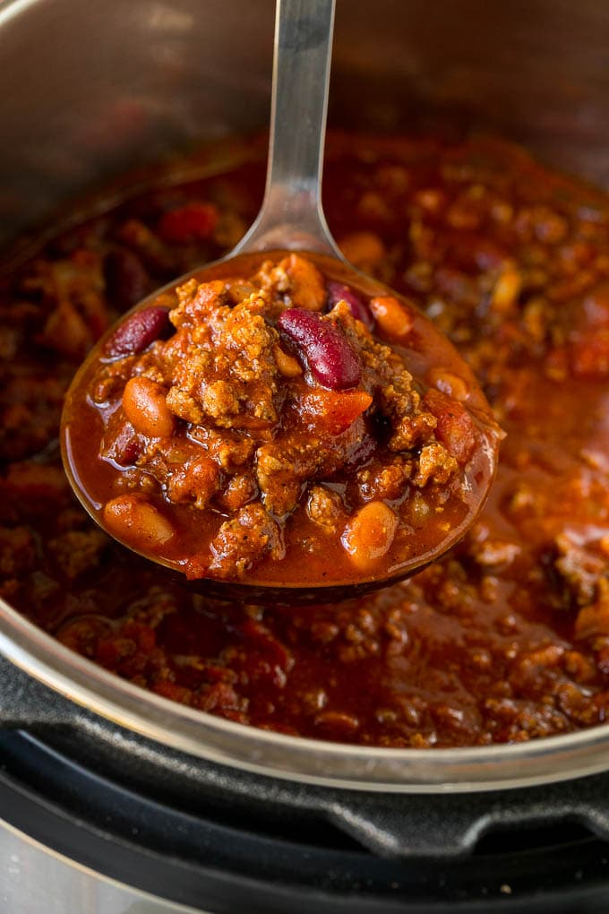

Instant Pot Chili

Description
This Instant Pot chili is a blend of beef, beans, tomatoes and spices, all
simmered together in a pressure cooker until tender and flavorful. The
easiest way to make chili; everyone will think you spent all day on it!
Ingredients
- 1 tablespoon canola oil
- 1 pound ground beef or turkey
- 1 cup water or beef broth
- 1 10-ounce can diced tomatoes with green chiles
- 28 ounces can crushed tomatoes
- 1 8-ounce can tomato sauce
- 1 4-ounce can green chiles
- 1 cup medium onion, diced
- 1 green pepper, diced
- 1 15-ounce can kidney beans, drained and rinsed
- 1 15-ounce can black beans, drained and rinsed
- 3 tablespoons chili powder
- 1 tablespoon cumin
- 2 teaspoons oregano
- 2 teaspoons garlic powder
- 1 teaspoon salt
- 1 teaspoon black pepper
Steps
- Turn your Instant Pot to the sauté function—once hot, add oil.
- Wait 1 minute, then brown ground beef or turkey.
- Add water or broth and stir deglazing pot.
-
Add all remaining ingredients, except for the spices and stir well to
incorporate.
- Stir in the spices and seasonings.
-
Put the pressure lid on the Instant Pot and turn the valve to sealed.
-
Cancel the sauté function and switch it to pressure cook. Set the timer
for 25 minutes.
-
Either perform a quick release or allow to naturally release, remove
lid, and stir